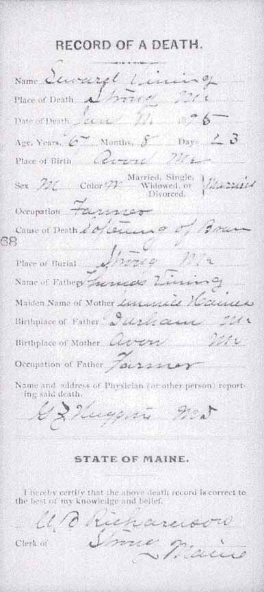
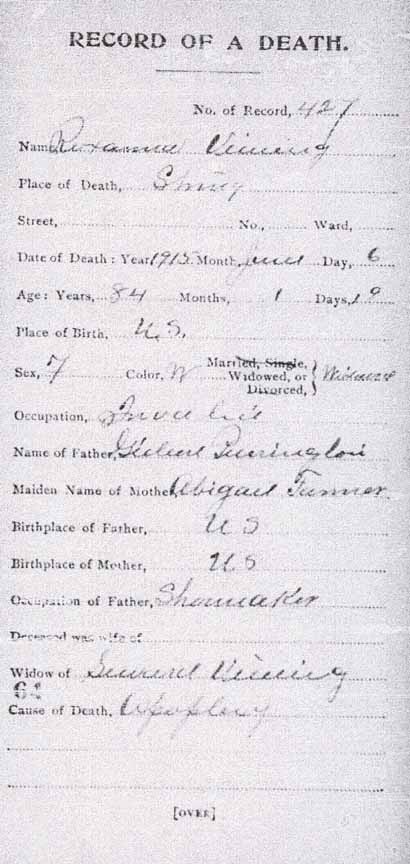
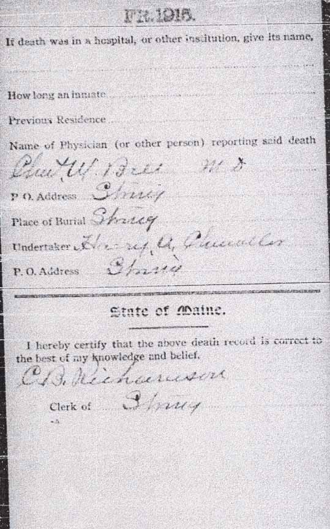

Census Data
| 1850 | 1860 | 1870 | 1880 | 1890 | 1900 | 1910 | 1920 | |
| Seward Vining | 23 [see note below] |
33 | 43 | 53 | ? | dead | ||
| Roxanna F. (Purrington) Vining | 19 [see note below] |
29 | 39 | 49 | ? | 69 [see note below] |
78 [see note below] |
dead |
| Lizze A. Vining | 9 | 19 | married and living in separate household | |||||
| Abbie Evelyn Vining | 2 | 12 | married and living in separate household | |||||
| Frances Lillian Vining | 7 | 17 | ? | married and living in separate household | ||||
| Albert Nelson Vining | 1 month | 10 | ? | living in separate household | ||||
| Leslie Alvin Vining | 8 | ? | married and living in separate household | |||||
| Winfield Vining | 5 | ? | married and living in separate household |


Death Data
Death records for Seward Vining and Roxanna F. (Purrington) Vining:




Descendants Data
Thank you to Albert Nelson Vining Jr. for identifying people in this photograph that was in his possession as 19 June 2006. All of the people he named were descendants of Seward Vining and Roxanna F. (Purrington) Vining. His identifications were expanded using full names from the online Vining family genealogy. Information in brackets is also from the online genealogy.
Back row (standing, from left to right): ?, ?, ?, ?, Christie Vining [daughter of Leslie Alvin Vining], ?, ?, ?, Albert Nelson Vining Jr. [son of Albert Nelson Vining], Helen Louise (Meserve) Vining [wife of Albert Nelson Vining], Randall O. Vining [son of Winfield R. Vining], Chester C. Allen [second husband of Lizzie A. Vining; she was the first child of Seward and Roxanna], Marcellus F. Will [husband of Abbie Evelyn Vining; she was the second child of Seward and Roxanna], Albert Nelson Vining [fourth child of Seward and Roxanna], housekeeper of Winfield R. Vining, ?, ?, Ella Amelia (Winter) Vining [wife of Leslie Alvin Vining], ?, ?, ?, ?, ?, Leslie Alvin Vining [fifth child of Seward and Roxanna].
Middle row (seated in chairs, from left to right): ?, ? [seated on lap],?, Lizzie A. (Vining) Allen [wife of Chester C. Allen], ?, ?, ?, ?, ?, ?, ?, ?, ?, ?, ?, ?, ?, ?, Abbie Evelyn (Vining) Will, ?, ?, ?, ?, Winfield R. Vining [sixth child of Seward and Roxanna].
Front row (seated/kneeling on ground, from left to right): all unknown to Albert Nelson Vining Jr.